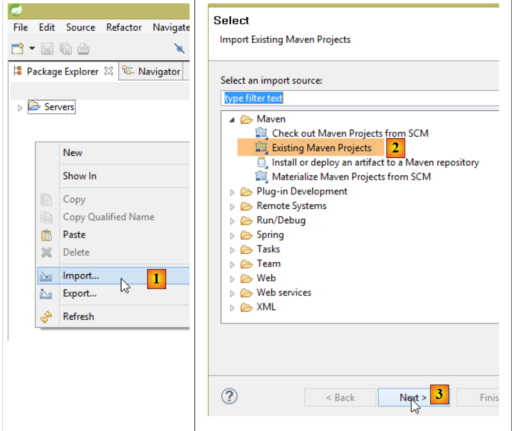
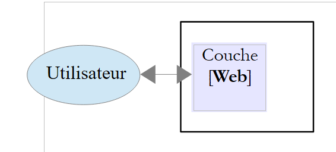
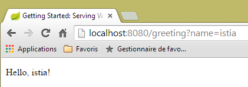
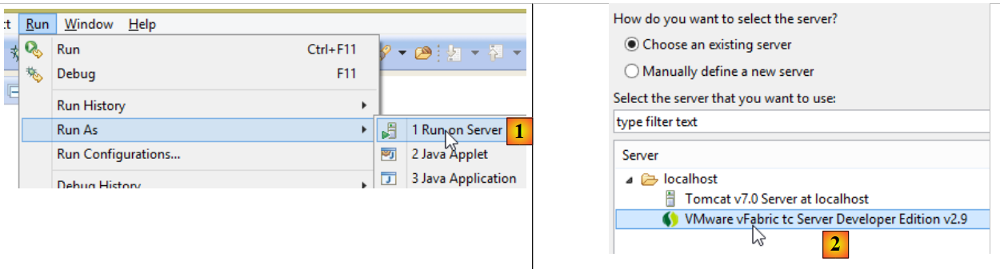

1. Introduction
Nous nous proposons ici d'introduire à l'aide d'exemples les notions importantes de Spring MVC, un framework Web Java qui fournit un cadre pour développer des applications Web selon le modèle MVC (Modèle – Vue – Contrôleur). Spring MVC est une branche de l'écosystème Spring [http://projects.spring.io/spring-framework/]. Nous présentons également le moteur de vues Thymeleaf [http://www.thymeleaf.org/].
Ce cours est à destination de lecteurs ayant une vraie maîtrise du langage Java. Il n'est pas nécessaire de connaître la programmation web.
Bien que détaillé, ce document est probablement incomplet. Spring est un framework immense avec de nombreuses ramifications. Pour approfondir Spring MVC, on pourra utiliser les références suivantes :
- le document de référence du framework Spring [http://docs.spring.io/spring/docs/current/spring-framework-reference/pdf/spring-framework-reference.pdf] ;
- de nombreux tutoriels Spring sont trouvés à l'URL [http://spring.io/guides]
- le site de [developpez.com] consacré à Spring [http://spring.developpez.com/].
Le document a été écrit de telle façon qu'il puisse être lu sans ordinateur sous la main. Aussi, donne-t-on beaucoup de copies d'écran.
1.1. Sources
Ce document a deux sources principales :
- [Introduction à ASP.NET MVC par l'exemple]. Spring MVC et ASP.NET MVC sont deux frameworks analogues, le second ayant été construit bien après le premier. Afin de pouvoir comparer les deux frameworks, j'ai repris la même progression que dans le document sur ASP.NET MVC ;
- le document sur ASP.NET MVC ne contient pas pour l'instant (déc 2014) d'étude de cas avec sa solution. J'ai repris ici celle du document [Tutoriel AngularJS / Spring 4] que j'ai modifiée de la façon suivante :
- l'étude de cas dans [Tutoriel AngularJS / Spring 4] est celle d'une application client / serveur où le serveur est un service web / jSON construit avec Spring MVC et le client, un client AngularJS,
- dans ce document, on reprend le même service web / jSON mais le client est une application web 2tier [client jQuery] / [service web / jSON] ;
En-dehors de ces sources, je suis allé chercher sur Internet les réponses à mes questions. C'est surtout le site [http://stackoverflow.com/] qui m'a alors été utile.
1.2. Les outils utilisés
Les exemples qui suivent ont été testés dans l'environnement suivant :
- machine Windows 8.1 pro 64 bits ;
- JDK 1.8 ;
- IDE Spring Tool Suite 3.6.3 (cf paragraphe 9.3) ;
- navigateur Chrome (les autres navigateurs n'ont pas été utilisés) ;
- extension Chrome [Advanced Rest Client] (cf paragraphe 9.6) ;
Attention au JDK 1.8. L'une des méthodes de l'étude de cas utilise une méthode du package [java.lang] de Java 8.
Tous les exemples sont des projets Maven qui peuvent être ouverts indifféremment par les IDE Eclipse, IntellijIDEA, Netbeans. Dans la suite, les copies d'écran proviennent de l'IDE Spring Tool Suite, une variante d'Eclipse.
1.3. Les exemples
Les exemples sont disponibles à l'URL [http://tahe.developpez.com/java/springmvc-thymeleaf] sous la forme d'un fichier zip à télécharger.
 |
Pour charger tous les projets dans STS on procèdera de la façon suivante :
 |
 |
- en [1-3], importez des projets Maven ;
 |
- en [4], désignez le dossier des exemples ;
- en [5], sélectionnez tous les projets du dossier ;
- en [6], validez ;
- en [7], les projets importés ;
1.4. La place de Spring MVC dans une application Web
Situons Spring MVC dans le développement d'une application Web. Le plus souvent, celle-ci sera bâtie sur une architecture multicouche telle que la suivante :
 |
- la couche [Web] est la couche en contact avec l'utilisateur de l'application Web. Celui-ci interagit avec l'application Web au travers de pages Web visualisées par un navigateur. C'est dans cette couche que se situe Spring MVC et uniquement dans cette couche ;
- la couche [métier] implémente les règles de gestion de l'application, tels que le calcul d'un salaire ou d'une facture. Cette couche utilise des données provenant de l'utilisateur via la couche [Web] et du SGBD via la couche [DAO] ;
- la couche [DAO] (Data Access Objects), la couche [ORM] (Object Relational Mapper) et le pilote JDBC gèrent l'accès aux données du SGBD. La couche [ORM] fait un pont entre les objets manipulés par la couche [DAO] et les lignes et les colonnes des tables d'une base de données relationnelle. Nous utiliserons ici l'ORM Hibernate. Une spécification appelée JPA (Java Persistence API) permet de s'abstraire de l'ORM utilisé si celui-ci implémente ces spécifications. C'est le cas d'Hibernate et des autres ORM Java. On appellera donc désormais la couche ORM, la couche JPA ;
- l'intégration des couches est faite par le framework Spring ;
La plupart des exemples donnés dans la suite, n'utiliseront qu'une seule couche, la couche [Web] :
 |
Ce document se terminera cependant par la construction d'une application Web multitier :
 |
Le navigateur se connectera à une application [Web1] implémentée par Spring MVC / Thymeleaf qui ira chercher ses données auprès d'un service web [Web2] lui aussi implémenté avec Spring MVC. Cette seconde application web accédera à une base de données.
1.5. Le modèle de développement de Spring MVC
Spring MVC implémente le modèle d'architecture dit MVC (Modèle – Vue – Contrôleur) de la façon suivante :
 |
Le traitement d'une demande d'un client se déroule de la façon suivante :
- demande - les URL demandées sont de la forme http://machine:port/contexte/Action/param1/param2/....?p1=v1&p2=v2&... Le [Front Controller] utilise un fichier de configuration ou des annotations Java pour " router " la demande vers le bon contrôleur et la bonne action au sein de ce contrôleur. Pour cela, il utilise le champ [Action] de l'URL. Le reste de l'URL [/param1/param2/...] est formé de paramètres facultatifs qui seront transmis à l'action. Le C de MVC est ici la chaîne [Front Controller, Contrôleur, Action]. Si aucun contrôleur ne peut traiter l'action demandée, le serveur Web répondra que l'URL demandée n'a pas été trouvée.
- traitement
- l'action choisie peut exploiter les paramètres parami que le [Front Controller] lui a transmis. Ceux-ci peuvent provenir de plusieurs sources :
- du chemin [/param1/param2/...] de l'URL,
- des paramètres [p1=v1&p2=v2] de l'URL,
- de paramètres postés par le navigateur avec sa demande ;
- dans le traitement de la demande de l'utilisateur, l'action peut avoir besoin de la couche [métier] [2b]. Une fois la demande du client traitée, celle-ci peut appeler diverses réponses. Un exemple classique est :
- une page d'erreur si la demande n'a pu être traitée correctement
- une page de confirmation sinon
- l'action demande à une certaine vue de s'afficher [3]. Cette vue va afficher des données qu'on appelle le modèle de la vue. C'est le M de MVC. L'action va créer ce modèle M [2c] et demander à une vue V de s'afficher [3] ;
- réponse - la vue V choisie utilise le modèle M construit par l'action pour initialiser les parties dynamiques de la réponse HTML qu'elle doit envoyer au client puis envoie cette réponse.
Maintenant, précisons le lien entre architecture web MVC et architecture en couches. Selon la définition qu'on donne au modèle, ces deux concepts sont liés ou non. Prenons une application web Spring MVC à une couche :
 |
Si nous implémentons la couche [Web] avec Spring MVC, nous aurons bien une architecture web MVC mais pas une architecture multicouche. Ici, la couche [web] s'occupera de tout : présentation, métier, accès aux données. Ce sont les actions qui feront ce travail.
Maintenant, considérons une architecture Web multicouche :
 |
La couche [Web] peut être implémentée sans framework et sans suivre le modèle MVC. On a bien alors une architecture multicouche mais la couche Web n'implémente pas le modèle MVC.
Par exemple, dans le monde .NET la couche [Web] ci-dessus peut être implémentée avec ASP.NET MVC et on a alors une architecture en couches avec une couche [Web] de type MVC. Ceci fait, on peut remplacer cette couche ASP.NET MVC par une couche ASP.NET classique (WebForms) tout en gardant le reste (métier, DAO, ORM) à l'identique. On a alors une architecture en couches avec une couche [Web] qui n'est plus de type MVC.
Dans MVC, nous avons dit que le modèle M était celui de la vue V, c.a.d. l'ensemble des données affichées par la vue V. Une autre définition du modèle M de MVC est donnée :
 |
Beaucoup d'auteurs considèrent que ce qui est à droite de la couche [Web] forme le modèle M du MVC. Pour éviter les ambigüités on peut parler :
- du modèle du domaine lorsqu'on désigne tout ce qui est à droite de la couche [Web]
- du modèle de la vue lorsqu'on désigne les données affichées par une vue V
Dans la suite, le terme " modèle M " désignera exclusivement le modèle d'une vue V.
1.6. Un premier projet Spring MVC
A partir de maintenant, nous travaillons avec l'IDE Spring Tool Suite (STS), une variante d'Eclipse personnalisée pour Spring. Le site [http://spring.io/guides] offre des tutoriels de démarrage pour découvrir l'écosystème Spring. Nous allons suivre l'un d'eux pour découvrir la configuration Maven nécessaire à un projet Spring MVC.
Note : la compréhension des détails du projet échappera à la plupart des débutants. Ce n'est pas important. Ces détails sont expliqués dans la suite du document. On se contentera de reproduire les manipulations.
1.6.1. Le projet de démonstration
 |
- en [1], nous importons l'un des guides Spring ;
 |
- en [2], nous choisissons l'exemple [Serving Web Content] ;
- en [3], on choisit le projet Maven ;
- en [4], on prend la version finale du guide ;
- en [5], on valide ;
- en [6], le projet importé ;
Examinons le projet, d'abord sa configuration Maven.
1.6.2. Configuration Maven
Le fichier [pom.xml] est le suivant :
<?xml version="1.0" encoding="UTF-8"?>
<project xmlns="http://maven.apache.org/POM/4.0.0" xmlns:xsi="http://www.w3.org/2001/XMLSchema-instance"
xsi:schemaLocation="http://maven.apache.org/POM/4.0.0 http://maven.apache.org/xsd/maven-4.0.0.xsd">
<modelVersion>4.0.0</modelVersion>
<groupId>org.springframework</groupId>
<artifactId>gs-serving-web-content</artifactId>
<version>0.1.0</version>
<parent>
<groupId>org.springframework.boot</groupId>
<artifactId>spring-boot-starter-parent</artifactId>
<version>1.1.9.RELEASE</version>
</parent>
<dependencies>
<dependency>
<groupId>org.springframework.boot</groupId>
<artifactId>spring-boot-starter-thymeleaf</artifactId>
</dependency>
</dependencies>
<properties>
<start-class>hello.Application</start-class>
</properties>
<build>
<plugins>
<plugin>
<groupId>org.springframework.boot</groupId>
<artifactId>spring-boot-maven-plugin</artifactId>
</plugin>
</plugins>
</build>
<repositories>
<repository>
<id>spring-milestone</id>
<url>https://repo.spring.io/libs-release</url>
</repository>
</repositories>
<pluginRepositories>
<pluginRepository>
<id>spring-milestone</id>
<url>https://repo.spring.io/libs-release</url>
</pluginRepository>
</pluginRepositories>
</project>
- lignes 6-8 : les propriétés du projet Maven. Manque une balise [<packaging>] indiquant le type du fichier produit par la compilation Maven. En l'absence de celle-ci, c'est le type [jar] qui est utilisé. L'application est donc une application exécutable de type console, et non une application web où le packaging serait alors [war] ;
- lignes 10-14 : le projet Maven a un projet parent [spring-boot-starter-parent] C'est lui qui définit l'essentiel des dépendances du projet. Elles peuvent être suffisantes, auquel cas on n'en rajoute pas, ou pas, auquel cas on rajoute les dépendances manquantes ;
- lignes 17-20 : l'artifact [spring-boot-starter-thymeleaf] amène avec lui les bibliothèques nécessaires à un projet spring MVC utilisé conjointement avec un moteur de vues appelé [Thymeleaf]. Cet artifact amène avec lui un très grand de bibliothèques dont celles d'un serveur Tomcat embarqué. C'est sur ce serveur que l'application sera exécutée ;
Les bibliothèques amenées par cette configuration sont très nombreuses :
 |  |
Ci-dessus on voit les archives du serveur Tomcat.
Spring Boot est une branche de l'écosystème Spring [http://projects.spring.io/spring-boot/]. Ce projet vise à diminuer au maximum la configuration des projets Spring. Pour cela, Spring Boot fait de l'auto-configuration à partir des dépendances présentes dans le Classpath du projet. Spring Boot fournit de nombreuses dépendances prêtes à l'emploi. Ainsi la dépendance [spring-boot-starter-thymeleaf] trouvée dans le projet Maven précédent amène toutes les dépendances nécessaires à une application Spring MVC utilisant le moteur de vues [Thymeleaf]. Avec ces deux caractéristiques :
- dépendances prêtes à l'emploi ;
- auto-configuration faite à partir de ces dépendances et de valeurs par défaut 'raisonnables', on peut avoir très rapidement une application Spring MVC opérationnelle. C'est le cas du projet étudié ici ;
1.6.3. L'architecture d'une application Spring MVC
Spring MVC implémente le modèle d'architecture dit MVC (Modèle – Vue – Contrôleur) :
 |
Le traitement d'une demande d'un client se déroule de la façon suivante :
- demande - les URL demandées sont de la forme http://machine:port/contexte/Action/param1/param2/....?p1=v1&p2=v2&... La [Dispatcher Servlet] est la classe de Spring qui traite les URL entrantes. Elle "route" l'URL vers l'action qui doit la traiter. Ces actions sont des méthodes de classes particulières appelées [Contrôleurs]. Le C de MVC est ici la chaîne [Dispatcher Servlet, Contrôleur, Action]. Si aucune action n'a été configurée pour traiter l'URL entrante, la servlet [Dispatcher Servlet] répondra que l'URL demandée n'a pas été trouvée (erreur 404 NOT FOUND) ;
- traitement
- l'action choisie peut exploiter les paramètres parami que la servlet [Dispatcher Servlet] lui a transmis. Ceux-ci peuvent provenir de plusieurs sources :
- du chemin [/param1/param2/...] de l'URL,
- des paramètres [p1=v1&p2=v2] de l'URL,
- de paramètres postés par le navigateur avec sa demande ;
- dans le traitement de la demande de l'utilisateur, l'action peut avoir besoin de la couche [metier] [2b]. Une fois la demande du client traitée, celle-ci peut appeler diverses réponses. Un exemple classique est :
- une page d'erreur si la demande n'a pu être traitée correctement
- une page de confirmation sinon
- l'action demande à une certaine vue de s'afficher [3]. Cette vue va afficher des données qu'on appelle le modèle de la vue. C'est le M de MVC. L'action va créer ce modèle M [2c] et demander à une vue V de s'afficher [3] ;
- réponse - la vue V choisie utilise le modèle M construit par l'action pour initialiser les parties dynamiques de la réponse HTML qu'elle doit envoyer au client puis envoie cette réponse.
Nous allons regarder ces différents éléments dans le projet étudié.
1.6.4. Le contrôleur C
 |
L'application importée a le contrôleur suivant :
package hello;
import org.springframework.stereotype.Controller;
import org.springframework.ui.Model;
import org.springframework.web.bind.annotation.RequestMapping;
import org.springframework.web.bind.annotation.RequestParam;
@Controller
public class GreetingController {
@RequestMapping("/greeting")
public String greeting(@RequestParam(value="name", required=false, defaultValue="World") String name, Model model) {
model.addAttribute("name", name);
return "greeting";
}
}
- ligne 8 : l'annotation [@Controller] fait de la classe [GreetingController] un contrôleur Spring, ç-à-d que ses méthodes sont enregistrées pour traiter des URL. Un contrôleur Spring est un singleton. Il est créé en un unique exemplaire ;
- ligne 11 : l'annotation [@RequestMapping] indique l'URL que traite la méthode, ici l'URL [/greeting]. Nous verrons ultérieurement que cette URL peut être paramétrée et qu'il est possible de récupérer ces paramètres ;
- ligne 12 : la méthode admet deux paramètres :
- [String name] : ce paramètre est initialisé par un paramètre de nom [name] dans la requête traitée, par exemple [/greeting?name=alfonse]. Ce paramètre est facultatif [required=false] et lorsqu'il n'est pas là, le paramètre [name] prendra la valeur 'World' [defaultValue="World"],
- [Model model] est un modèle de vue. Il arrive vide et c'est le rôle de l'action (la méthode greeting) de le remplir. C'est ce modèle qui sera transmis à la vue que va faire afficher l'action. C'est donc un modèle de vue ;
- ligne 13 : la valeur de [name] est mis dans le modèle de la vue. La classe [Model] se comporte comme un dictionnaire ;
- ligne 14 : la méthode rend le nom de la vue qui doit afficher le modèle construit. Le nom exact de la vue dépend de la configuration de [Thymeleaf]. En l'absence de celle-ci, la vue affichée ici sera la vue [/templates/greeting.html] ou le dossier [templates] doit être à la racine du Classpath du projet ;
Examinons notre projet Eclipse :
 |
Les dossiers [src/main/java] et [src/main/resources] sont tous deux des dossiers dont le contenu sera mis dans le Classpath du projet. Pour [src/main/java] ce sera les versions compilées des sources Java qui y seront mis. Le contenu du dossier [src/main/resources] est lui mis dans le Classpath sans modification. On voit donc que le dossier [templates] sera dans le Classpath du projet [1].
On peut vérifier cela [2-3] dans la fenêtre [Navigator] d'Eclipse [Window / Show view / Other / General / Navigator]. Le dossier [target] est produit par la compilation (appelée build) du projet. Le dossier [classes] représente la racine du Classpath. On voit que le dossier [templates] y est présent.
1.6.5. La vue V
Dans le MVC, nous venons de voir le contrôleur C et le modèle de vue M. La vue V est ici représentée par le fichier [greeting.html] suivant :
<!DOCTYPE HTML>
<html xmlns:th="http://www.thymeleaf.org">
<head>
<title>Getting Started: Serving Web Content</title>
<meta http-equiv="Content-Type" content="text/html; charset=UTF-8" />
</head>
<body>
<p th:text="'Hello, ' + ${name} + '!'" />
</body>
</html>
- ligne 2 : l'espace de noms des balises Thymeleaf ;
- ligne 8 : une balise <p> (paragraphe) avec un attribut Thymeleaf. L'attribut [th:text] fixe le contenu du paragraphe. A l'intérieur de la chaîne de caractères on a l'expression [${name}]. Cela signifie qu'on veut la valeur de l'attribut [name] du modèle de la vue. Or on se souvient que cet attribut a été placé dans le modèle par l'action :
model.addAttribute("name", name);
Le premier paramètre fixe le nom de l'attribut, le second sa valeur.
1.6.6. Exécution
 |
La classe [Application.java] est la classe exécutable du projet. Son code est le suivant :
package hello;
import org.springframework.boot.autoconfigure.EnableAutoConfiguration;
import org.springframework.boot.SpringApplication;
import org.springframework.context.annotation.ComponentScan;
@ComponentScan
@EnableAutoConfiguration
public class Application {
public static void main(String[] args) {
SpringApplication.run(Application.class, args);
}
}
- ligne 11 : la classe est exécutable avec une méthode [main] propre aux applications console. La classe [SpringApplication] de la ligne 12 va lancer le serveur Tomcat présent dans les dépendances et déployer le service web dessus ;
- ligne 4 : on voit que la classe [SpringApplication] appartient au projet [Spring Boot] ;
- ligne 12 : le premier paramètre est la classe qui configure le projet, le second d'éventuels paramètres ;
- ligne 8 : l'annotation [@EnableAutoConfiguration] demande à Spring Boot de faire la configuration du projet ;
- ligne 7 : l'annotation [@ComponentScan] fait que le dossier qui contient la classe [Application] va être exploré pour rechercher les composants Spring. Un sera trouvé, la classe [GreetingController] qui a l'annotation [@Controller] qui en fait un composant Spring ;
Exécutons le projet :
 |
On obtient les logs console suivants :
- ligne 13 : le serveur Tomcat démarre sur le port 8080 (ligne 12) ;
- ligne 17 : la servlet [DispatcherServlet] est présente ;
- ligne 20 : la méthode [hello.GreetingController.greeting] a été découverte ainsi que l'URL qu'elle traite [/greeting] ;
Pour tester l'application web, on demande l'URL [http://localhost:8080/greeting] :
 |  |
Il peut être intéressant de voir les entêtes HTTP envoyés par le serveur. Pour cela, on va utiliser le plugin de Chrome appelé [Advanced Rest Client] (cf paragraphe 9.6) :
 |
- en [1], l'URL demandée ;
- en [2], la méthode GET est utilisée ;
- en [3], le serveur a indiqué qu'il envoyait une réponse au format HTML ;
- en [4], la réponse HTML ;
- en [5], on demande la même URL mais cette fois-ci avec un POST ;
- en [7], les informations sont envoyées au serveur sous la forme [urlencoded] ;
- en [6], le paramètre name avec sa valeur ;
- en [8], le navigateur indique au serveur qu'il lui envoie des informations [urlencoded] ;
- en [9], la réponse HTML du serveur ;
 |  |  |
1.6.7. Création d'une archive exécutable
Il est possible de créer une archive exécutable en-dehors d'Eclipse. La configuration nécessaire est dans le fichier [pom.xml] :
<properties>
<start-class>hello.Application</start-class>
</properties>
<build>
<plugins>
<plugin>
<groupId>org.springframework.boot</groupId>
<artifactId>spring-boot-maven-plugin</artifactId>
</plugin>
</plugins>
</build>
- les lignes 7-10 définissent le plugin qui va créer l'archive exécutable ;
- la ligne 2 définit la classe exécutable du projet ;
On procède ainsi :
 |
- en [1] : on exécute une cible Maven ;
 |
- en [2] : il y a deux cibles (goals) : [clean] pour supprimer le dossier [target] du projet Maven, [package] pour le régénérer ;
- en [3] : le dossier [target] généré le sera dans ce dossier ;
- en [4] : on génère la cible ;
Note : pour que la génération réussisse, il faut que la JVM utilisée par STS soit un JDK [Window / Preferences / Java / Installed JREs] :
 |
Dans les logs qui apparaissent dans la console, il est important de voir apparaître le plugin [spring-boot-maven-plugin]. C'est lui qui génère l'archive exécutable.
Avec une console, on se place dans le dossier généré :
gs-serving-web-content-complete\target>dir
...
Répertoire de D:\data\istia-1415\spring mvc\dvp\gs-serving-web-content-complete
\target
27/11/2014 17:07 <DIR> .
27/11/2014 17:07 <DIR> ..
27/11/2014 17:07 <DIR> classes
27/11/2014 17:07 <DIR> generated-sources
27/11/2014 17:07 13 419 551 gs-serving-web-content-0.1.0.jar
27/11/2014 17:07 3 522 gs-serving-web-content-0.1.0.jar.original
27/11/2014 17:07 <DIR> maven-archiver
27/11/2014 17:07 <DIR> maven-status
- ligne 12 : l'archive générée ;
Cette archive est exécutée de la façon suivante :
gs-serving-web-content-complete\target>java -jar gs-serving-web-content-0.1.0.jar
. ____ _ __ _ _
/\\ / ___'_ __ _ _(_)_ __ __ _ \ \ \ \
( ( )\___ | '_ | '_| | '_ \/ _` | \ \ \ \
\\/ ___)| |_)| | | | | || (_| | ) ) ) )
' |____| .__|_| |_|_| |_\__, | / / / /
=========|_|==============|___/=/_/_/_/
:: Spring Boot :: (v1.1.9.RELEASE)
2014-11-27 17:14:50.439 INFO 8172 --- [ main] hello.Application : Starting Application on Gportpers3 with PID 8172 (D:\data\istia-1415\spring mvc\dvp\gs-serving-web-content-complete\target\gs-serving-web-content-0.1.0.jar started by ST in D:\data\istia-1415\spring mvc\dvp\gs-serving-web-content-complete\target)
2014-11-27 17:14:50.491 INFO 8172 --- [ main] ationConfigEmbeddedWebApplicationContext : Refreshing org.springframework.boot.context.embedded.AnnotationConfigEmbeddedWebApplicationContext@12f4ec3a: startup date [Thu Nov 27 17:14:50 CET 2014]; root of context hierarchy
Note : il faut auparavant arrêter le service web éventuellement lancé dans Eclipse (cf page 16).
Maintenant que l'application web est lancée, on peut l'interroger avec un navigateur :
 |
1.6.8. Déployer l'application sur un serveur Tomcat
Si Spring Boot s'avère très pratique en mode développement, une application en production sera déployée sur un vrai serveur Tomcat. Voici comment procéder :
Modifier le fichier [pom.xml] de la façon suivante :
<?xml version="1.0" encoding="UTF-8"?>
<project xmlns="http://maven.apache.org/POM/4.0.0" xmlns:xsi="http://www.w3.org/2001/XMLSchema-instance"
xsi:schemaLocation="http://maven.apache.org/POM/4.0.0 http://maven.apache.org/xsd/maven-4.0.0.xsd">
<modelVersion>4.0.0</modelVersion>
<groupId>org.springframework</groupId>
<artifactId>gs-serving-web-content</artifactId>
<version>0.1.0</version>
<packaging>war</packaging>
<parent>
<groupId>org.springframework.boot</groupId>
<artifactId>spring-boot-starter-parent</artifactId>
<version>1.1.9.RELEASE</version>
</parent>
<dependencies>
<!-- environnement Thymeleaf -->
<dependency>
<groupId>org.springframework.boot</groupId>
<artifactId>spring-boot-starter-thymeleaf</artifactId>
</dependency>
<!-- génération du war -->
<!-- <dependency>
<groupId>org.springframework.boot</groupId>
<artifactId>spring-boot-starter-tomcat</artifactId>
<scope>provided</scope>
</dependency> -->
</dependencies>
<properties>
<start-class>hello.Application</start-class>
</properties>
<build>
<plugins>
<plugin>
<groupId>org.springframework.boot</groupId>
<artifactId>spring-boot-maven-plugin</artifactId>
</plugin>
</plugins>
</build>
<repositories>
<repository>
<id>spring-milestone</id>
<url>https://repo.spring.io/libs-release</url>
</repository>
</repositories>
<pluginRepositories>
<pluginRepository>
<id>spring-milestone</id>
<url>https://repo.spring.io/libs-release</url>
</pluginRepository>
</pluginRepositories>
</project>
Les modifications sont à faire à deux endroits :
- ligne 9 : il faut indiquer qu'on va générer une archive war (Web ARchive) ;
- lignes 24-28 : il faut ajouter une dépendance sur l'artifact [spring-boot-starter-tomcat]. Cet artifact amène toutes les classes de Tomcat dans les dépendances du projet ;
- ligne 27 : cet artifact est [provided], ç-à-d que les archives correspondantes ne seront pas placées dans le war généré. En effet, ces archives seront trouvées sur le serveur Tomcat sur lequel s'exécutera l'application ;
En fait, si on regarde les dépendances actuelles du projet, on constate que la dépendance [spring-boot-starter-tomcat] est déjà présente :
 |
Il n'y a donc pas lieu de la rajouter dans le fichier [pom.xml]. On l'a mise en commentaires pour mémoire.
Il faut par ailleurs configurer l'application web. En l'absence de fichier [web.xml], cela se fait avec une classe héritant de [SpringBootServletInitializer] :
 |
La classe [ApplicationInitializer] est la suivante :
package hello;
import org.springframework.boot.builder.SpringApplicationBuilder;
import org.springframework.boot.context.web.SpringBootServletInitializer;
public class ApplicationInitializer extends SpringBootServletInitializer {
@Override
protected SpringApplicationBuilder configure(SpringApplicationBuilder application) {
return application.sources(Application.class);
}
}
- ligne 6 : la classe [ApplicationInitializer] étend la classe [SpringBootServletInitializer] ;
- ligne 9 : la méthode [configure] est redéfinie (ligne 8) ;
- ligne 10 : on fournit la classe qui configure le projet ;
Pour exécuter le projet, on peut procéder ainsi :
 |
- en [1], on exécute le projet sur l'un des serveurs enregistrés dans l'IDE Eclipse ;
- en [2], on choisit ci-dessus [Tomcat v8.0] ;
Ceci fait, on peut demander l'URL [http://localhost:8080/gs-rest-service/greeting/?name=Mitchell] dans un navigateur :
 |
Note : selon les versions de [tomcat] et [tc Server Developer], cette exécution peut échouer. Cela a été le cas avec [Apache Tomcat 8.0.3 et 8.0.15] par exemple. Ci-dessus la version de Tomcat utilisée était la [8.0.9].
Nous savons désormais générer une archive war. Par la suite, nous continuerons à travailler avec Spring Boot et son archive jar exécutable.
1.7. Un second projet Spring MVC
1.7.1. Le projet de démonstration
 |
- en [1], nous importons l'un des guides Spring ;
 |
- en [2], nous choisissons l'exemple [Rest Service] ;
- en [3], on choisit le projet Maven ;
- en [4], on prend la version finale du guide ;
- en [5], on valide ;
- en [6], le projet importé ;
Les services web accessibles via des URL standard et qui délivrent du texte jSON sont souvent appelés des services REST (REpresentational State Transfer). Dans ce document, je me contenterai d'appeler le service que nous allons construire, un service web / jSON. Un service est dit Restful s'il respecte certaines règles. Je n'ai pas cherché à respecter celles-ci.
Examinons maintenant le projet importé, d'abord sa configuration Maven.
1.7.2. Configuration Maven
Le fichier [pom.xml] est le suivant :
<?xml version="1.0" encoding="UTF-8"?>
<project xmlns="http://maven.apache.org/POM/4.0.0" xmlns:xsi="http://www.w3.org/2001/XMLSchema-instance"
xsi:schemaLocation="http://maven.apache.org/POM/4.0.0 http://maven.apache.org/xsd/maven-4.0.0.xsd">
<modelVersion>4.0.0</modelVersion>
<groupId>org.springframework</groupId>
<artifactId>gs-rest-service</artifactId>
<version>0.1.0</version>
<parent>
<groupId>org.springframework.boot</groupId>
<artifactId>spring-boot-starter-parent</artifactId>
<version>1.1.9.RELEASE</version>
</parent>
<dependencies>
<dependency>
<groupId>org.springframework.boot</groupId>
<artifactId>spring-boot-starter-web</artifactId>
</dependency>
</dependencies>
<properties>
<start-class>hello.Application</start-class>
</properties>
<build>
<plugins>
<plugin>
<groupId>org.springframework.boot</groupId>
<artifactId>spring-boot-maven-plugin</artifactId>
</plugin>
</plugins>
</build>
<repositories>
<repository>
<id>spring-releases</id>
<url>https://repo.spring.io/libs-release</url>
</repository>
</repositories>
<pluginRepositories>
<pluginRepository>
<id>spring-releases</id>
<url>https://repo.spring.io/libs-release</url>
</pluginRepository>
</pluginRepositories>
</project>
- lignes 6-8 : les propriétés du projet Maven. Manque une balise [<packaging>] indiquant le type du fichier produit par la compilation Maven. En l'absence de celle-ci, c'est le type [jar] qui est utilisé. L'application est donc une application exécutable de type console, et non une application web où le packaging serait alors [war] ;
- lignes 10-14 : le projet Maven a un projet parent [spring-boot-starter-parent]. C'est lui qui définit l'essentiel des dépendances du projet. Elles peuvent être suffisantes, auquel cas on n'en rajoute pas, ou pas, auquel cas on rajoute les dépendances manquantes ;
- lignes 17-20 : l'artifact [spring-boot-starter-web] amène avec lui les bibliothèques nécessaires à un projet Spring MVC de type service web où il n'y a pas de vues générées. Cet artifact amène avec lui un très grand de bibliothèques dont celles d'un serveur Tomcat embarqué. C'est sur ce serveur que l'application sera exécutée ;
Les bibliothèques amenées par cette configuration sont très nombreuses :
 |  |
Ci-dessus on voit les trois archives du serveur Tomcat.
1.7.3. L'architecture d'un service Spring [web / jSON]
Rappelons comment Spring MVC implémente le modèle MVC :
 |
Le traitement d'une demande d'un client se déroule de la façon suivante :
- demande - les URL demandées sont de la forme http://machine:port/contexte/Action/param1/param2/....?p1=v1&p2=v2&... La [Dispatcher Servlet] est la classe de Spring qui traite les URL entrantes. Elle "route" l'URL vers l'action qui doit la traiter. Ces actions sont des méthodes de classes particulières appelées [Contrôleurs]. Le C de MVC est ici la chaîne [Dispatcher Servlet, Contrôleur, Action]. Si aucune action n'a été configurée pour traiter l'URL entrante, la servlet [Dispatcher Servlet] répondra que l'URL demandée n'a pas été trouvée (erreur 404 NOT FOUND) ;
- traitement
- l'action choisie peut exploiter les paramètres parami que la servlet [Dispatcher Servlet] lui a transmis. Ceux-ci peuvent provenir de plusieurs sources :
- du chemin [/param1/param2/...] de l'URL,
- des paramètres [p1=v1&p2=v2] de l'URL,
- de paramètres postés par le navigateur avec sa demande ;
- dans le traitement de la demande de l'utilisateur, l'action peut avoir besoin de la couche [metier] [2b]. Une fois la demande du client traitée, celle-ci peut appeler diverses réponses. Un exemple classique est :
- une page d'erreur si la demande n'a pu être traitée correctement
- une page de confirmation sinon
- l'action demande à une certaine vue de s'afficher [3]. Cette vue va afficher des données qu'on appelle le modèle de la vue. C'est le M de MVC. L'action va créer ce modèle M [2c] et demander à une vue V de s'afficher [3] ;
- réponse - la vue V choisie utilise le modèle M construit par l'action pour initialiser les parties dynamiques de la réponse HTML qu'elle doit envoyer au client puis envoie cette réponse.
Pour un service web / jSON, l'architecture précédente est légèrement modifiée :
 |
- en [4a], le modèle qui est une classe Java est transformé en chaîne jSON par une bibliothèque jSON ;
- en [4b], cette chaîne jSON est envoyée au navigateur ;
1.7.4. Le contrôleur C
 |
L'application importée a le contrôleur suivant :
package hello;
import java.util.concurrent.atomic.AtomicLong;
import org.springframework.web.bind.annotation.RequestMapping;
import org.springframework.web.bind.annotation.RequestParam;
import org.springframework.web.bind.annotation.RestController;
@RestController
public class GreetingController {
private static final String template = "Hello, %s!";
private final AtomicLong counter = new AtomicLong();
@RequestMapping("/greeting")
public Greeting greeting(@RequestParam(value = "name", defaultValue = "World") String name) {
return new Greeting(counter.incrementAndGet(), String.format(template, name));
}
}
- ligne 9 : l'annotation [@RestController] fait de la classe [GreetingController] un contrôleur Spring, ç-à-d que ses méthodes sont enregistrées pour traiter des URL. Nous avons vu l'annotation similaire [@Controller]. Le résultat des méthodes de ce contrôleur était un type [String] qui était le nom de la vue à afficher. Ici c'est différent. Les méthodes d'un contrôleur de type [@RestController] rendent des objets qui sont sérialisés pour être envoyés au navigateur. Le type de sérialisation opérée dépend de la configuration de Spring MVC. Ici, ils seront sérialisés en jSON. C'est la présence d'une bibliothèque jSON dans les dépendances du projet qui fait que Spring Boot va, par autoconfiguration, configurer le projet de cette façon ;
- ligne 14 : l'annotation [@RequestMapping] indique l'URL que traite la méthode, ici l'URL [/greeting] ;
- ligne 15 : nous avons déjà expliqué l'annotation [@RequestParam]. Le résultat rendu par la méthode est un objet de type [Greeting].
- ligne 12 : un entier long de type atomique. Cela signifie qu'il supporte la concurrence d'accès. Plusieurs threads peuvent vouloir incrémenter la variable [counter] en même temps. Cela se fera proprement. Un thread ne peut lire la valeur du compteur que si le thread en train de le modifier a terminé sa modification.
1.7.5. Le modèle M
Le modèle M produit par la méthode précédente est l'objet [Greeting] suivant :
 |
package hello;
public class Greeting {
private final long id;
private final String content;
public Greeting(long id, String content) {
this.id = id;
this.content = content;
}
public long getId() {
return id;
}
public String getContent() {
return content;
}
}
La transformation jSON de cet objet créera la chaîne de caractères {"id":n,"content":"texte"}. Au final, la chaîne jSON produite par la méthode du contrôleur sera de la forme :
{"id":2,"content":"Hello, World!"}
ou
{"id":2,"content":"Hello, John!"}
1.7.6. Exécution
 |
La classe [Application.java] est la classe exécutable du projet. Son code est le suivant :
package hello;
import org.springframework.boot.autoconfigure.EnableAutoConfiguration;
import org.springframework.boot.SpringApplication;
import org.springframework.context.annotation.ComponentScan;
@ComponentScan
@EnableAutoConfiguration
public class Application {
public static void main(String[] args) {
SpringApplication.run(Application.class, args);
}
}
Nous avons déjà rencontré et expliqué ce code dans l'exemple précédent.
1.7.7. Exécution du projet
|
On obtient les logs console suivants :
- ligne 13 : le serveur Tomcat démarre sur le port 8080 (ligne 12) ;
- ligne 17 : la servlet [DispatcherServlet] est présente ;
- ligne 20 : la méthode [GreetingController.greeting] a été découverte ;
Pour tester l'application web, on demande l'URL [http://localhost:8080/greeting] :
 |  |
On reçoit bien la chaîne jSON attendue.
Note : cet exemple n'a pas fonctionné avec le navigateur intégré d'Eclipse.
Il peut être intéressant de voir les entêtes HTTP envoyés par le serveur. Pour cela, on va utiliser le plugin de Chrome appelé [Advanced Rest Client] (cf Annexes, paragraphe 9.6) :
 |
- en [1], l'URL demandée ;
- en [2], la méthode GET est utilisée ;
- en [3], la réponse jSON ;
- en [4], le serveur a indiqué qu'il envoyait une réponse au format jSON ;
- en [5], on demande la même URL mais cette fois-ci avec un POST ;
- en [7], les informations sont envoyées au serveur sous la forme [urlencoded] ;
- en [6], le paramètre name avec sa valeur ;
- en [8], le navigateur indique au serveur qu'il lui envoie des informations [urlencoded] ;
- en [9], la réponse jSON du serveur ;
1.7.8. Création d'une archive exécutable
Comme nous l'avons fait pour le projet précédent, nous créons une archive exécutable :
 |
 |
- en [1] : on exécute une cible Maven ;
- en [2] : il y a deux cibles (goals) : [clean] pour supprimer le dossier [target] du projet Maven, [package] pour le régénérer ;
- en [3] : le dossier [target] généré, le sera dans ce dossier ;
- en [4] : on génère la cible ;
Dans les logs qui apparaissent dans la console, il est important de voir apparaître le plugin [spring-boot-maven-plugin]. C'est lui qui génère l'archive exécutable.
Avec une console, on se place dans le dossier généré :
D:\Temp\wksSTS\gs-rest-service\target>dir
...
11/06/2014 15:30 <DIR> classes
11/06/2014 15:30 <DIR> generated-sources
11/06/2014 15:30 11 073 572 gs-rest-service-0.1.0.jar
11/06/2014 15:30 3 690 gs-rest-service-0.1.0.jar.original
11/06/2014 15:30 <DIR> maven-archiver
11/06/2014 15:30 <DIR> maven-status
...
- ligne 5 : l'archive générée ;
Cette archive est exécutée de la façon suivante :
D:\Temp\wksSTS\gs-rest-service-complete\target>java -jar gs-rest-service-0.1.0.jar
. ____ _ __ _ _
/\\ / ___'_ __ _ _(_)_ __ __ _ \ \ \ \
( ( )\___ | '_ | '_| | '_ \/ _` | \ \ \ \
\\/ ___)| |_)| | | | | || (_| | ) ) ) )
' |____| .__|_| |_|_| |_\__, | / / / /
=========|_|==============|___/=/_/_/_/
:: Spring Boot :: (v1.1.0.RELEASE)
2014-06-11 15:32:47.088 INFO 4972 --- [ main] hello.Application
: Starting Application on Gportpers3 with PID 4972 (D:\Temp\wk
sSTS\gs-rest-service-complete\target\gs-rest-service-0.1.0.jar started by ST in
D:\Temp\wksSTS\gs-rest-service-complete\target)
...
Note : il faut auparavant arrêter le service web éventuellement lancé dans Eclipse (cf paragraphe 1.6.6).
Maintenant que l'application web est lancée, on peut l'interroger avec un navigateur :
 |
1.7.9. Déployer l'application sur un serveur Tomcat
Comme il a été fait pour le projet précédent, nous modifions le fichier [pom.xml] de la façon suivante :
<?xml version="1.0" encoding="UTF-8"?>
<project xmlns="http://maven.apache.org/POM/4.0.0" xmlns:xsi="http://www.w3.org/2001/XMLSchema-instance"
xsi:schemaLocation="http://maven.apache.org/POM/4.0.0 http://maven.apache.org/xsd/maven-4.0.0.xsd">
<modelVersion>4.0.0</modelVersion>
<groupId>org.springframework</groupId>
<artifactId>gs-rest-service</artifactId>
<version>0.1.0</version>
<packaging>war</packaging>
...
</project>
- ligne 9 : il faut indiquer qu'on va générer une archive war (Web ARchive) ;
Il faut par ailleurs configurer l'application web. En l'absence de fichier [web.xml], cela se fait avec une classe héritant de [SpringBootServletInitializer] :
 |
La classe [ApplicationInitializer] est la suivante :
package hello;
import org.springframework.boot.builder.SpringApplicationBuilder;
import org.springframework.boot.context.web.SpringBootServletInitializer;
public class ApplicationInitializer extends SpringBootServletInitializer {
@Override
protected SpringApplicationBuilder configure(SpringApplicationBuilder application) {
return application.sources(Application.class);
}
}
- ligne 6 : la classe [ApplicationInitializer] étend la classe [SpringBootServletInitializer] ;
- ligne 9 : la méthode [configure] est redéfinie (ligne 8) ;
- ligne 10 : on fournit la classe qui configure le projet ;
Pour exécuter le projet, on peut procéder ainsi :
 |
- en [1-2], on exécute le projet sur l'un des serveurs enregistrés dans l'IDE Eclipse ;
Ceci fait, on peut demander l'URL [http://localhost:8080/gs-rest-service/greeting/?name=Mitchell] dans un navigateur :
|
1.8. Conclusion
Nous avons introduit deux types de projets Spring MVC :
- un projet où l'application web envoie un flux HTML au navigateur. Ce flux est généré par le moteur de vues [Thymeleaf] ;
- un projet où l'application web envoie un flux jSON au navigateur ;
Dans le premier cas, deux dépendances Maven sont nécessaires au projet :
<parent>
<groupId>org.springframework.boot</groupId>
<artifactId>spring-boot-starter-parent</artifactId>
<version>1.1.9.RELEASE</version>
</parent>
<dependencies>
<dependency>
<groupId>org.springframework.boot</groupId>
<artifactId>spring-boot-starter-thymeleaf</artifactId>
</dependency>
</dependencies>
Dans le second cas, les dépendances Maven sont les suivantes :
<parent>
<groupId>org.springframework.boot</groupId>
<artifactId>spring-boot-starter-parent</artifactId>
<version>1.1.9.RELEASE</version>
</parent>
<dependencies>
<dependency>
<groupId>org.springframework.boot</groupId>
<artifactId>spring-boot-starter-web</artifactId>
</dependency>
</dependencies>
Les dépendances amenées en cascade par ces configurations sont très nombreuses et beaucoup sont inutiles. Pour la mise en exploitation de l'application, on utilisera une configuration Maven manuelle où seront présentes les seules dépendances nécessaires au projet.
Nous allons maintenant revenir aux bases de la programmation web en présentant deux notions de base :
- le dialogue HTTP (HyperText Transfer Protocol) entre un navigateur et une application web ;
- le langage HTML (HyperText Markup Language) que le navigateur interprète pour afficher une page qu'il a reçue ;